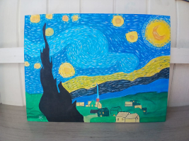

🎨
Biografia
Vincent van Gogh nasceu em 1853, na Holanda. Tornou-se um dos maiores nomes da história da arte, influenciando gerações com seu estilo único.
Explore a trajetória de um dos maiores artistas da história, conheça suas obras mais famosas e inspire-se em seu legado.

Pintada em Saint-Rémy-de-Provence, "A Noite Estrelada" é considerada uma das obras mais importantes de Vincent van Gogh. O céu turbulento, as estrelas brilhantes e as pinceladas marcantes tornaram a obra um símbolo do Pós-Impressionismo.
Ver GaleriaVincent van Gogh nasceu em 1853, na Holanda. Tornou-se um dos maiores nomes da história da arte, influenciando gerações com seu estilo único.
Entre 1881 e 1890 produziu mais de duas mil obras, incluindo pinturas, desenhos e estudos que marcaram o movimento pós-impressionista.
Apesar de hoje ser mundialmente reconhecido, Van Gogh vendeu apenas uma pintura durante sua vida.
1889

1888

1888



Van Gogh utilizava pinceladas espessas e marcantes para transmitir movimento e emoção em suas pinturas.
As combinações intensas de amarelos, azuis e verdes transformaram suas obras em verdadeiras explosões de cor.
Mais do que representar a realidade, Van Gogh pintava sentimentos, tornando sua arte profundamente expressiva.
"Sonho com a pintura e depois pinto o meu sonho."— Vincent van Gogh